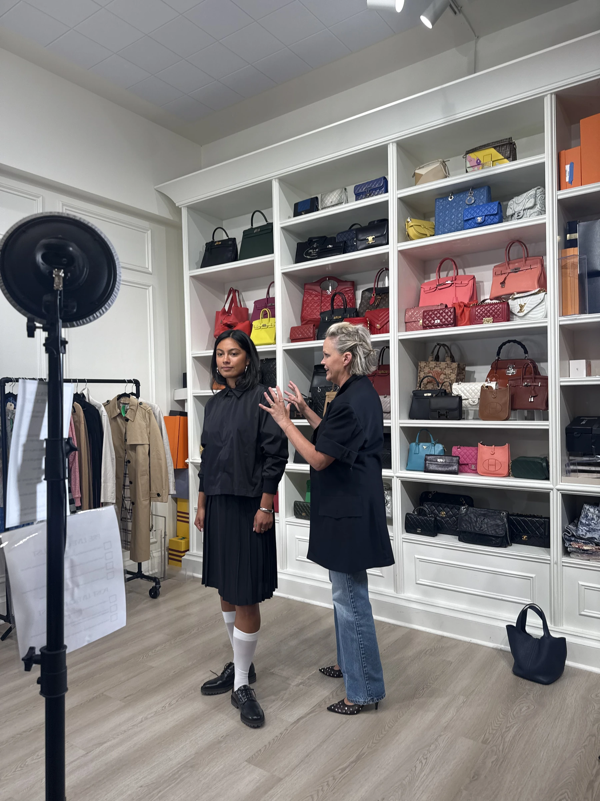
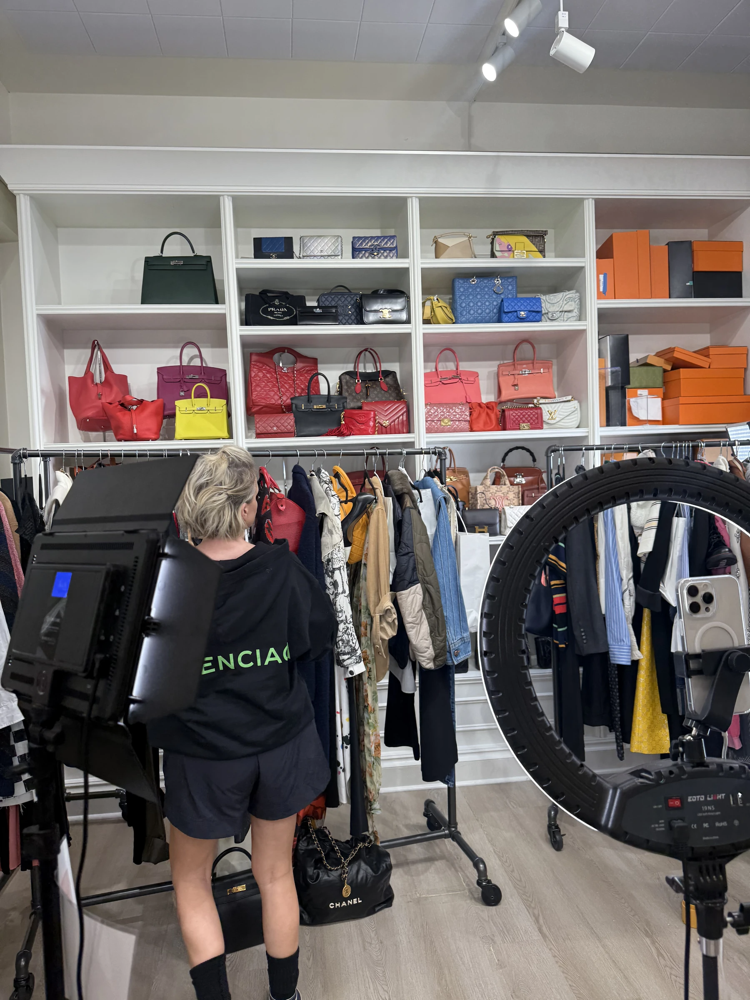
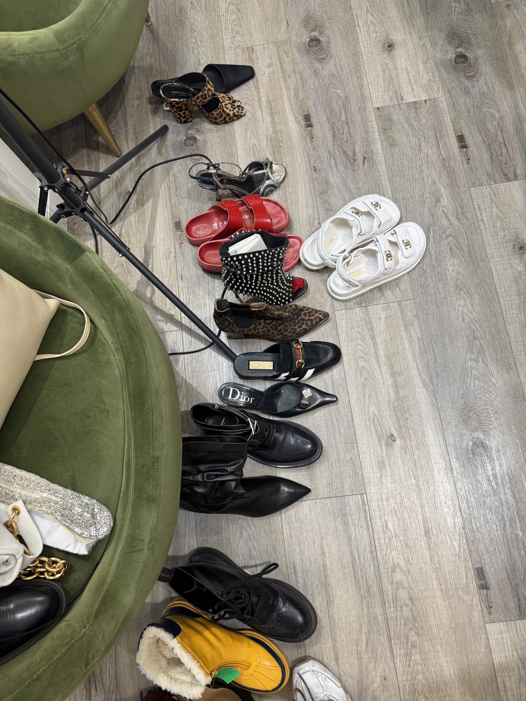
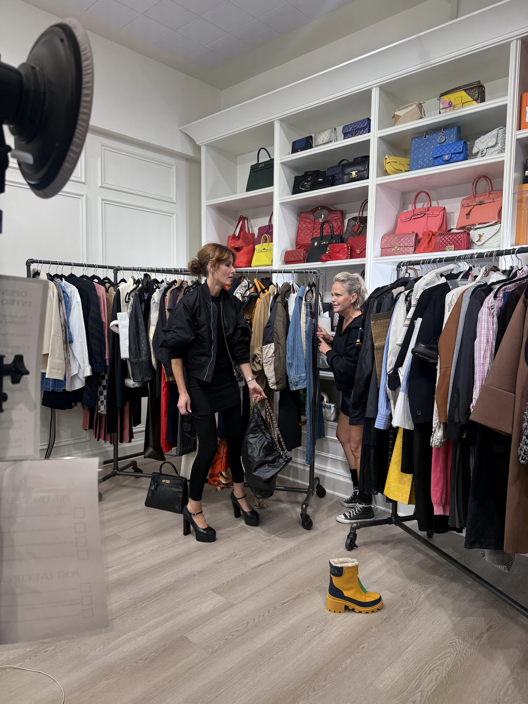
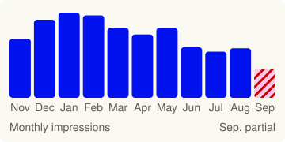
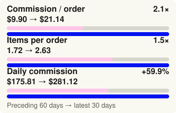
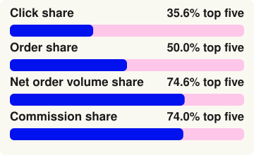

Tiffany Wendel: Building a Social Commerce System
Tiffany Wendel's styling perspective lived across Pinterest, Instagram, LTK, and ShopMy, each serving a different purpose. I helped organize that ecosystem by curating products, managing affiliate platforms, adapting content for each platform, and using performance reporting to guide future product and content decisions.



What I did
My role blended creative thinking with day-to-day execution. I helped organize products, adapt content for multiple platforms, manage affiliate platforms, and turn performance data into better product and content decisions.
- Research & Product CurationResearched trends, identified products, and curated platform-ready assortments.
- Platform ContentAdapted products and content across Pinterest, LTK, and ShopMy to support a consistent shopping experience.
- Affiliate Platform ManagementManaged affiliate platforms by organizing collections, maintaining links, and supporting publishing workflows.
- Performance AnalysisTracked platform performance to identify stronger products, retail partners, and future content opportunities.
How the system looked in practice
Behind the reporting was a repeatable workflow that turned styling ideas into organized content and shoppable collections.


Selected results
Analyzing platform performance helped shape future content, inform posting decisions, and identify the products and retail partners that consistently performed best.
Swipe to view all results
Pinterest visibility

September is partial; the final two reporting dates are estimated.
Consistent posting created long-term visibility and helped establish a steady presence on Pinterest over time.
More value per recent order

Thoughtful product curation led to higher-value purchases, with recent orders generating more items and greater commission per purchase.
Focused partners, outsized value

Rachel Comey, Tibi, Aurate, Chan Luu, and Nomasei
Comparing retailer performance and commission rates helped determine where similar products should be linked to maximize affiliate value.
A clearer operating system
Working with Tiffany reinforced that the strongest creative decisions aren't made in isolation. They come from combining thoughtful curation, organized systems, and performance insights to continuously improve how people discover and shop products.
Data notes
Results are reported separately by platform and reporting period. No cross-platform totals were created.
Data notes and methodology
- Pinterest includes two estimated dates, and September is a partial month.
- LTK uses reconciled 30-day and 90-day summaries.
- The preceding 60 days equal the 90-day totals minus the latest 30-day totals.
- ShopMy uses reconciled domain-level and order-level data.
- The platform results show association, not sole causation.